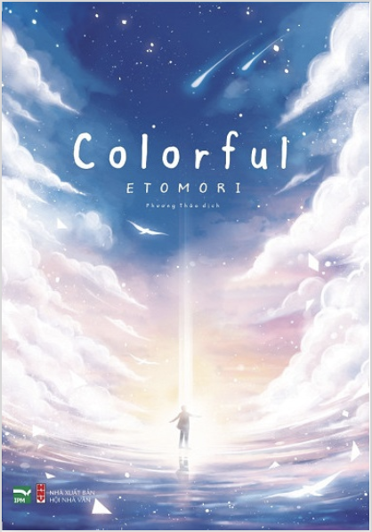
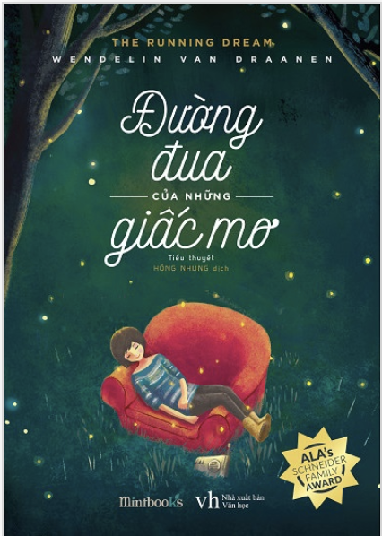
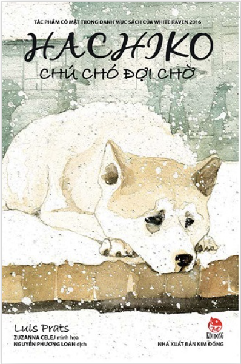
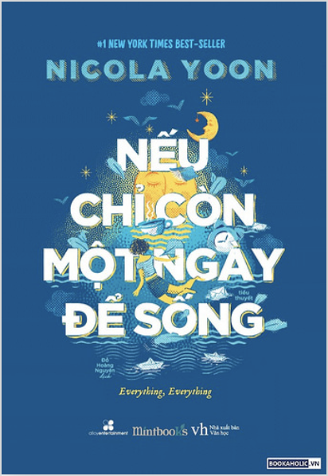

 Colorful men theo những bất an bình thường mà ai cũng có thể gặp phải trong cuộc sống, nhưng một số người lại thấy chúng quá dị thường, quá kinh khủng, dẫn đến khổ tâm dằn vặt và rồi không thể vượt được qua...
Chi TiếtĐọc SáchBắt Trẻ Đồng Xanh là một cuốn sách nhỏ, mỏng. Điều đó cũng là tính cách của nhân vật chính, Holden – nổi loạn, thiếu giáo dục, và lạ lùng. Holden không thích cái gì cả, cậu chỉ muốn đứng trên mép vực của một cánh đồng bao la...
Chi TiếtĐọc SáchTruyện về Hachiko được kể lại với lời văn sâu lắng của Luis Prats cùng hình minh họa màu nước ấn tượng của Zuzanna Celej làm lay động trái tim cho bạn theo cách mà Hachiko đã làm rung động hàng triệu con tim trên thế giới...
Chi TiếtĐọc SáchLà một trong những tác phẩm văn học nước ngoài bán chạy bình chọn trên tạp chí New York Times. Quyển sách cũng đã được chuyển thể thành phim , gây bão phòng vé từ đó quyển sách càng được nhiều độc giả đón đọc...
Chi TiếtĐọc Sách
Nguyễn Trí Tài - 19522572 - Đồ án
cuối kì môn Internet và công nghệ Web - IE104.M11 - Website đọc sách đơn giản